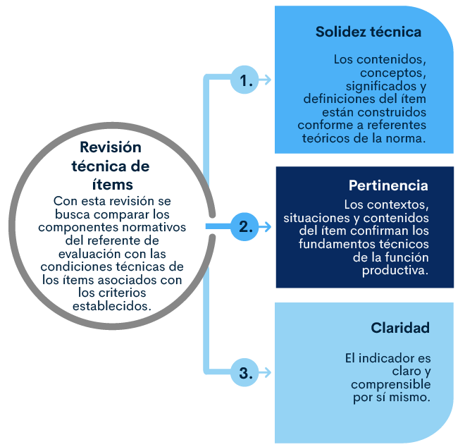
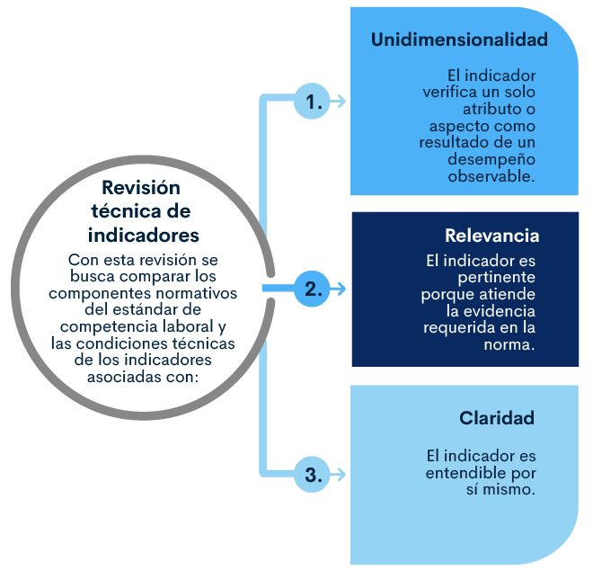
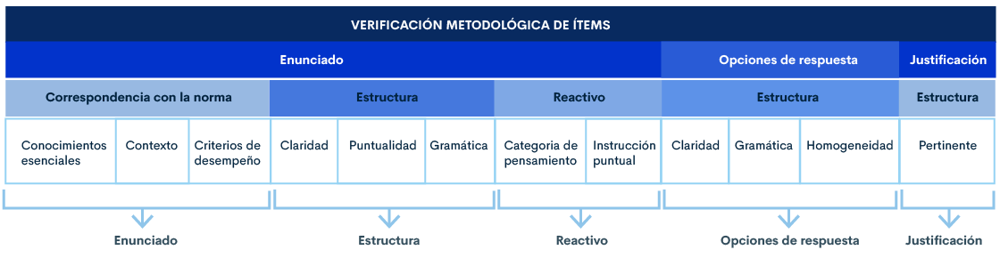
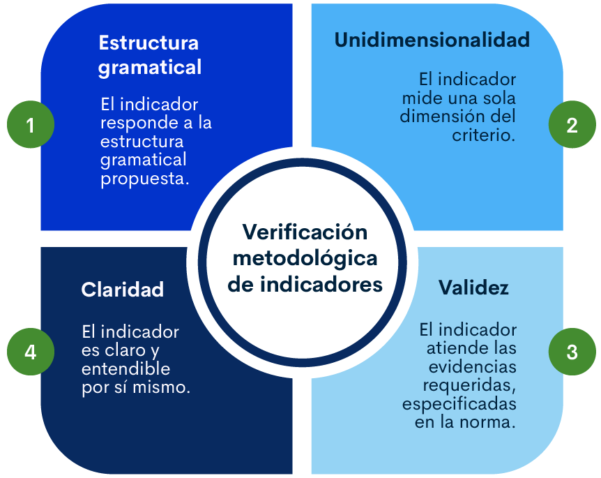

1. Revisión
La revisión de los ítems e indicadores es el cumplimiento de los requisitos especificados en la planeación para asegurar la validez de los resultados. Esta fase comprende, la revisión sistemática y objetiva de los productos construidos antes de la entrega al banco nacional de instrumentos de evaluación, en relación con su conformidad disciplinar, técnica, metodológica y normativa.
1.1 Revisión técnica de ítems e indicadores
La revisión técnica debe ser realizada por expertos técnicos del área productiva a evaluar, diferentes al evaluador de competencia laboral y/o experto en la función productiva que participaron en la construcción de instrumentos. Cuyo propósito es garantizar la veracidad de los ítems
Revisión técnica de ítems
Con esta revisión se busca comparar los componentes normativos del referente de evaluación con las condiciones técnicas de los ítems asociados con los criterios establecidos.
A continuación, se explicará el diligenciamiento del formato para la verificación técnica de ítems.
Revisión técnica de indicadores
Con esta revisión se busca comparar los componentes normativos del estándar de competencia laboral y las condiciones técnicas de los indicadores asociadas con:
Por tanto, podrá reconocer su proceso a través del siguiente video.
1.2 Revisión metodológica de los ítems e indicadores
La revisión metodológica de ítems e indicadores debe ser realizada por un conocedor de esta, garantizando que se cumpla con los criterios establecidos.
Revisión metodológica de ítems
Busca cotejar los componentes normativos del estándar de competencia laboral y las condiciones operativas y procedimentales de los ítems asociados con los criterios establecidos.
Estos criterios para la revisión metodológica de ítems están divididos en tres partes: enunciado, opciones de respuesta y justificación, estás a su vez, tienen cada una sus criterios para la revisión.
Revisión metodológica de indicadores
La revisión metodológica de indicadores debe ser realizada por un conocedor de la metodología de construcción de instrumentos. Con esta se busca cotejar los componentes normativos del estándar de competencia laboral a través de los criterios establecidos para la revisión así:
A continuación, se explicará el diligenciamiento del formato para la verificación metodológica de ítems.
Glosario
Categoría de pensamiento:son las habilidades del pensamiento requeridas al candidato a través de los reactivos en una prueba de conocimiento.
Claridad:el ítem e indicador son claros y entendibles por sí mismos.
Clave de respuesta:alternativa que satisface el reactivo.
Constructo:conocimiento esencial.
Contexto:hace referencia al escenario laboral, elementos y condiciones variables donde se plantea una acción. ¿Dónde?.
Criterios de Desempeño Específicos (COE):descripción de los requisitos de calidad para el resultado obtenido en el desempeño laboral, Son la base para que un Evaluador de Competencias Laborales juzgue si un trabajador es, o aún no es competente, permiten precisar acerca de lo que se hizo y la calidad con que fue realizado.
Criterios de desempeño generales. (CDG):son los requisitos de calidad relacionados con aspectos de gestión del riesgo, seguridad y salud en el trabajo, gestión de información, gestión ambiental, u otros que apliquen a la función en su totalidad.
Cuestionario:es un instrumento de evaluación conformado por un conjunto intencionado y articulado de ítems que responden a los propósitos planteados en la estructura de la Norma de Competencia Laboral o Norma Sectorial de Competencia Laboral y cuya aplicación permite evaluar el conocimiento del candidato.
Enunciado:Parte del ítem que contiene la información suficiente y necesaria con base al contenido específico a evaluar.
Estructura funcional de la ocupación (EFO):conjunto de Normas Sectoriales de Competencia Laboral que permiten el logro del propósito de una ocupación. Está conformada por el resumen de EFO y las NSCL. En ella se describe lo que se hace en una ocupación, en qué tipo de organizaciones o sectores se desempeña el trabajador, el nivel de cualificación y las funciones laborales que se desarrollan en la misma. Corresponde a una ocupación e incluye las denominaciones o empleos y las funciones que se desempeñan en ella.
Estructura gramatical:el ítem e indicador responde a la estructura gramatical propuesta.
Evaluación:proceso que valora el cumplimiento de los requisitos de los referentes de evaluación por parte de un candidato.
Evidencias de conocimiento:se refiere a la aplicación de las teorías y principios de base científica, así como a las habilidades cognitivas en relación con la función.
Evidencias de desempeño:son acciones reales que se evidencian directamente en la ejecución de la función productiva por parte del candidato, y que permiten demostrar el cumplimiento de los parámetros de calidad establecidos en los criterios de desempeño definidos en el referente de evaluación. Se valora a través de un conjunto de indicadores de desempeño, expresados en una lista de chequeo (Ver GCC-F- 032 Lista de Chequeo de Evidencia de Desempeño/ Producto de evaluación y certificación de competencias laborales). Estos se presentan y valoran en el sitio real de trabajo o en el ambiente definido por el SENA. (Ver GCC–I–003 Instructivo para la recolección de evidencias de conocimiento, desempeño y producto de evaluación de competencias laborales).
Evidencias de producto:corresponde al resultado del desempeño observado y valorado o descrito en el referente de evaluación. Se valora a través de un conjunto de indicadores, expresados en una lista de chequeo (ver GCC – F- 032 Lista de Chequeo de evidencia de desempeño/ producto de evaluación y certificación de competencias laborales).
Los productos presentados por el candidato (en cualquier medio) permanecerán en el expediente y serán revisados por el Verificador de ECCL (sin emitir ningún juicio) y una vez finalizado el proceso, dichas evidencias son regresadas a los candidatos. (Ver GCC-I-003 Instructivo para la recolección de evidencias de conocimiento, desempeño y producto de evaluación de competencias laborales).
Evidencias requeridas:aspectos que permiten a una persona demostrar que es competente en el desempeño de una función. Corresponde a pruebas definidas y manifiestas del desempeño y conocimiento que determina la competencia laboral de una persona.
Homogeneidad:igualdad de caracteres en las opciones de respuesta.
Indicador de evaluación del desempeño:describe las habilidades y destrezas que debe realizar el candidato de acuerdo con las evidencias de desempeño exigidas por la norma de competencia laboral.
Indicador de evaluación del producto:son atributos o características esenciales del producto de una función productiva, hacen referencia a los aspectos claves de los productos en términos de las especificaciones de forma, contenido, diseño, funcionalidad y ofrecen indicios de la calidad del trabajo realizado.
Instrucción puntual:el reactivo responde al estímulo cognitivo con detalle y precisión.
Instrumentos de evaluación:herramientas de evaluación y medición construidas bajo metodologías definidas por el SENA que permiten la recolección y valoración de evidencias determinadas en un estándar de competencia laboral.
Opciones de respuesta:parte concluyente del ítem caracterizado a través de frases, datos o informaciones, lógicas y verosímil, que pueden ser escogidas como respuesta a la pregunta.
Pertinencia:los contextos, situaciones y contenidos del ítem confirman los fundamentos técnicos de la función productiva.
Relevancia:el indicador es pertinente porque atiende la evidencia requerida en la norma.
Solidez técnica:los contenidos, conceptos, significados y definiciones del ítem están construidos conforme a referentes teóricos de la norma.
Unidimensionalidad:el indicador verifica un solo atributo o aspecto como resultado de un desempeño observable.
Validez:el indicador atiende las evidencias requeridas especificadas en la norma.
Material complementario
| Nombre del documento o material. | Tipo de material. | Enlace del Recurso. |
|---|---|---|
| Formato norma sectorial de competencia laboral (operador de motoniveladora según manuales) | Descargar | |
| Formato norma sectorial de competencia laboral (preparar operación de costura según manuales de operación y parámetros de calidad) | Descargar |
Referencias bibliográficas
Servicio Nacional de Aprendizaje. (2018). Guía para la normalización de competencias laborales.
Servicio Nacional de Aprendizaje. (2019, noviembre). Guía para evaluar y certificar competencias laborales.
Servicio Nacional de Aprendizaje. (2019). Instructivo para la planeación y construcción de ítems e indicadores de evaluación de competencia laboral.
Servicio Nacional de Aprendizaje. (2019). Reglamento de ética del proceso gestión de certificación de competencias laborales.